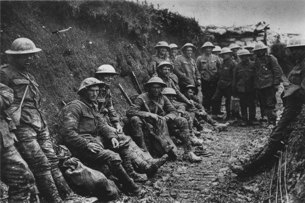

Como a História Pode Evitar Novos Conflitos
Salvar as futuras gerações do flagelo da guerra foi a principal motivação para a criação das Nações Unidas, cuja fundação remonta à devastação deixada por duas guerras mundiais. Desde a sua criação, a ONU tem sido frequentemente chamada à arena internacional para promover a cooperação internacional e evitar guerras, para ajudar a restaurar a paz no desencadear de conflitos armados e para dar apoio a países que emergiram recentemente da guerra. No entanto há lições as quais são essenciais para a manutenção da paz social:
Ensinar história
A história como ferramenta construtora de identidade e sociedade ensina o reconhecimento e o pertencimento, nos permite visualizar os efeitos e causas de nossas ações de quem somos e até mesmo nos mostrar para onde iremos. É pela memória, instrumento da história, que revisamos nossa vida, nos identificamos e não nos perdemos nas ideologias que pregam discursos de ódio e disseminam violência.
Aprender valores
Os próprios conflitos do passado podem nos inflienciar de modo ético, nos ensinar, mesmo que de forma indireta, empatia e respeito a partir de reflexões que nos lapidam como sujeitos e nos trazem humanidade.
Assumir nossas falhas e nos redimir
As reflexões que desenvolvemos pela aprendizagem mudam nosso pensamento, a ideia do certo e errado do melhor e pior nos direcionam a formas de busca a ideia de ser uma pessoa melhor e buscar a paz coletiva que só em forma de lei não se faz muito efetiva, pois é preciso criar a consciencia da paz que é única forma de nos sentirmos seres humanos.

Quer saber mais sobre a paz? Clique aqui
Acesse também: ONU- Paz e segurança